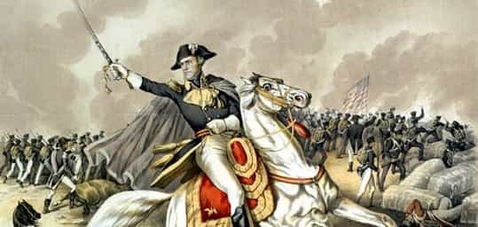

A voice for reason, wisdom and truth. You killed my culture, prepare to die.


By now you might have seen the confusing news of the treasury replacing President Andrew Jackson on the $20 bill for Harriet Tubman. While such a move would normally lead us to scratch our heads, when you look deeper the reasoning behind the decision becomes clear.
In an age where literally anything else would be more important to focus on right now, it takes a very ballsy agenda to outright dismantle a past American great. It seems that the powers that be enjoy pushing the line to test the limits of how much the American people will accept outright mocking of their political process.
From the NY Times:
The new designs, from the Bureau of Engraving and Printing, would be made public in 2020 in time for the centennial of woman’s suffrage and the 19th Amendment to the Constitution. None of the bills, including a new $5 note, would reach circulation until the next decade.
To clear up the mess, here is the information you need to know doing battle against any SJW praising this change.

There’s no real way to completely describe the aura and attitude of Andrew Jackson besides the word badass. He was one of the last true patriot presidents and we owe a lot of America’s success to his policies and personality. Here are a few quick facts on Andrew Jackson:
Those are only a few of the courageous acts from a true American. So why does the SJWs say he was, like, a total meanie to the Indians and stuff?
Because they don’t read history or live in reality. The reality was that rural American populations were being attacked and entire towns wiped out by the Red Stick Indian tribe. From his biography,
In 1813 a faction of the Creek Indian Nation called the Red Sticks under Red Eagle, slew nearly 250 Alabama settlers in a brutal manner, resulting in the calling out of two 2,500 man forces, one under Jackson to punish and stop the Indians. It was feared that the Indians, in close contact with the Spanish, would begin a cooperative campaign against the southern U.S.
It goes on to record that Jackson even had one of his own men shot who threatened to abandon his post. There’s no doubt Jackson was a hard and relentless man. However, the age he lived in demanded that he do what was necessary for the survival of the American people.
Jackson was involved in what was later called the “Banking Wars.” He was strongly against the private national banking system which could create debt out of thin air and own the nation through interest (sound familiar?). In the end, Jackson was victorious taking down the national private bank, thus delivering America debt free for the only time in its history. His later years would be described as “empire building” and you can do your own research from here.
Jackson was aggressively against the private banking system and effectively ended it. Now the Federal Reserve, which is our modern private banking system, gets their revenge while mocking the American people by removing their historical enemy.
According to the Maxwell School of Syracuse University, a study was done on the truth of this woman and the conclusion was:
That is where much of the misinformation about her has come from—historical fiction that is not always clear about when it is historical and when it is fictive.
“So little information about Tubman has been based on fact and so much based on myth and created history,” says anthropologist Douglas Armstrong. It seems most of her deeds were excessively exaggerated or completely made up. Milton Sernett, another researcher on the project, also stated;
It gradually dawned on me that much of what we as Americans thought we knew about Harriet Tubman was not derived from good historical research but was a perpetuation of a larger-than-life story,” he says. “The symbol had overpowered the life, had overshadowed the historical person.
So how can a more-or-less mythical American figure topple the true heroic deeds of one of America’s most important icons? Because America is cucked. The Fed owns your interpretation of history and culture at this point. With a legion of SJWs who support this narrative, it will be hard press to get the truth out.
This action will not be taking place until at least 2020. That’s the deadline. So we still have time to turn things around. Get educated with the power of truth and reality. Go to battle against shills any chance you get. Not to persuade them, but to show others the fallacy of their arguments.
As you go through this process, you will only see more and more of your culture covered up, slandered or openly mocked by the elite and their minions until the official narrative is busted open in the mainstream. Be the one who helps that initiative.
Read More: The Truth About Multiculturalism And Third-World Immigration